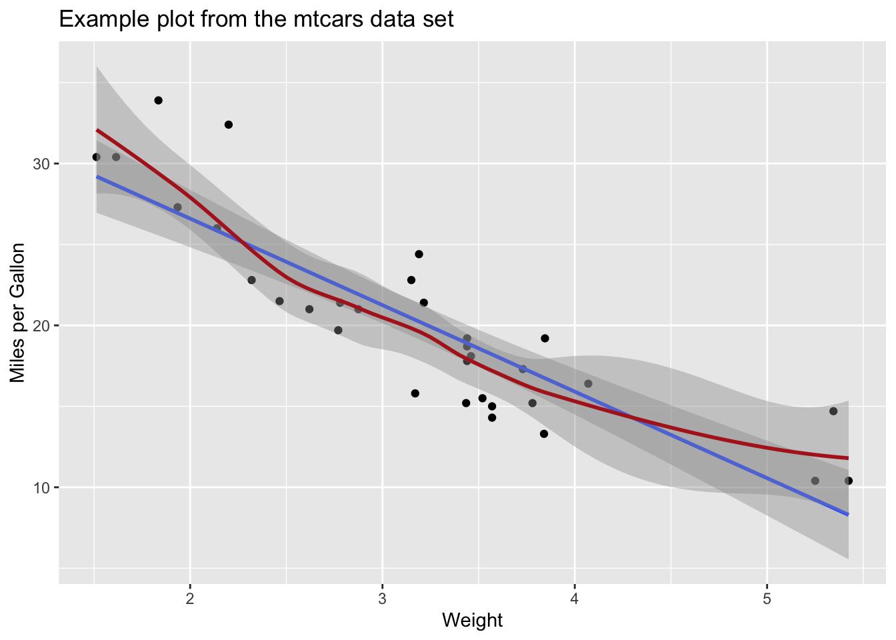

x = 5
y = 2
z = x + y
print(z)[1] 7w = sqrt(z)
print(w)[1] 2.645751Workshop: Bayesian statistics
Marvin Schmitt
Hello! If you can read this, odds are that you have successfully installed the R and RStudio programming environment for the course. Please follow the instructions in this document to make sure that everything works as expected. First and foremost, please download the .qmd file so that you can execute the installation steps.
Open the downloaded file bayes_setup.qmd in RStudio and execute the code while you read through the instructions.
Do not hit Render yet, the installation commands might cause errors. Instead, execute the code in the cells by navigating your cursor to a line and hitting Ctrl+Enter (Cmd+Enter on Mac).
Once you have installed all packages, you can go ahead and hit Render once to get a pretty output file.
RLet’s see if the basic R functionality works as expected.
Awesome, let’s install some key packages for working in R!
We install tidyverse, which is a great collection of data manipulation and visualization tools. The installation might require your input (like typing Yes) in the Terminal window at the bottom of Rstudio.
Loading required package: tidyverse── Attaching core tidyverse packages ──────────────────────── tidyverse 2.0.0 ──
✔ dplyr 1.1.2 ✔ readr 2.1.4
✔ forcats 1.0.0 ✔ stringr 1.5.0
✔ ggplot2 3.4.3 ✔ tibble 3.2.1
✔ lubridate 1.9.2 ✔ tidyr 1.3.0
✔ purrr 1.0.2
── Conflicts ────────────────────────────────────────── tidyverse_conflicts() ──
✖ dplyr::filter() masks stats::filter()
✖ dplyr::lag() masks stats::lag()
ℹ Use the conflicted package (<http://conflicted.r-lib.org/>) to force all conflicts to become errorsUpon successful installation, we test whether everything works as expected.
library(tidyverse)
library(ggplot2)
df = mtcars %>%
select(mpg, wt, cyl)
ggplot(data=df, aes(x=wt, y=mpg)) +
geom_point() +
geom_smooth(method="lm") +
geom_smooth(col="firebrick")+
labs(title="Example plot from the mtcars data set",
x="Weight",
y="Miles per Gallon")`geom_smooth()` using formula = 'y ~ x'
`geom_smooth()` using method = 'loess' and formula = 'y ~ x'
Large parts of this installation helper are taken from Paul Bürkner with permission, thank you!
brms and rstanThe following explains how to install a C++ compiler which is required for brms and Stan
RStudio should ask if you want to install Rtools, in which case you should say Yes and click through the installer. After that, the brms model at the end of this script should run.
RStudio will likely ask if you want to install CommandLineTooals in which case you should say Yes and click through the installer. After that, the brms model at the end of this script should run
Alternatively, you can install the required tools directly from the command line. Run the following code,
or open the Terminal (Finder > Applications > Terminal) and run:
xcode-select --installMake sure that a C++ compiler is installed and can be called within R via
If no warning occurs and a few lines of system code are printed out, the compiler should work correctly
If your Mac has an Intel Chip, install gfortran v8.2: https://github.com/fxcoudert/gfortran-for-macOS/releases/tag/8.2
If your Mac has an Apple M1/M2 chip, install gfortran v11 withthe .pkg file listed under Assets at the bottom of this page: https://github.com/fxcoudert/gfortran-for-macOS/releases/tag/11-arm-alpha2
This is an example model to make sure that the setup works.
Family: poisson
Links: mu = log
Formula: count ~ zAge + zBase * Trt + (1 | patient)
Data: epilepsy (Number of observations: 236)
Draws: 4 chains, each with iter = 2000; warmup = 1000; thin = 1;
total post-warmup draws = 4000
Group-Level Effects:
~patient (Number of levels: 59)
Estimate Est.Error l-95% CI u-95% CI Rhat Bulk_ESS Tail_ESS
sd(Intercept) 0.59 0.07 0.46 0.75 1.00 865 1675
Population-Level Effects:
Estimate Est.Error l-95% CI u-95% CI Rhat Bulk_ESS Tail_ESS
Intercept 1.78 0.12 1.55 2.00 1.01 853 1389
zAge 0.09 0.09 -0.08 0.26 1.01 723 1330
zBase 0.71 0.12 0.47 0.94 1.01 795 1232
Trt1 -0.27 0.17 -0.60 0.06 1.00 804 1564
zBase:Trt1 0.05 0.16 -0.27 0.37 1.01 900 1268
Draws were sampled using sampling(NUTS). For each parameter, Bulk_ESS
and Tail_ESS are effective sample size measures, and Rhat is the potential
scale reduction factor on split chains (at convergence, Rhat = 1).Congratulations, you’re all set!
If you have any issues that you can’t fix: